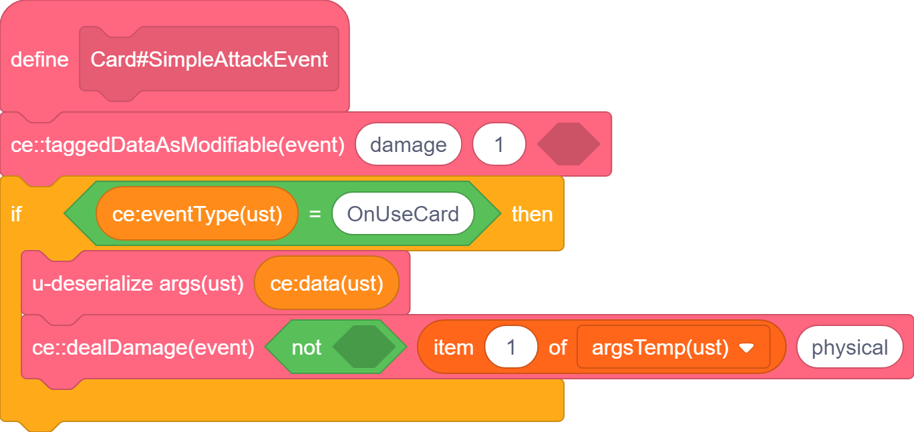
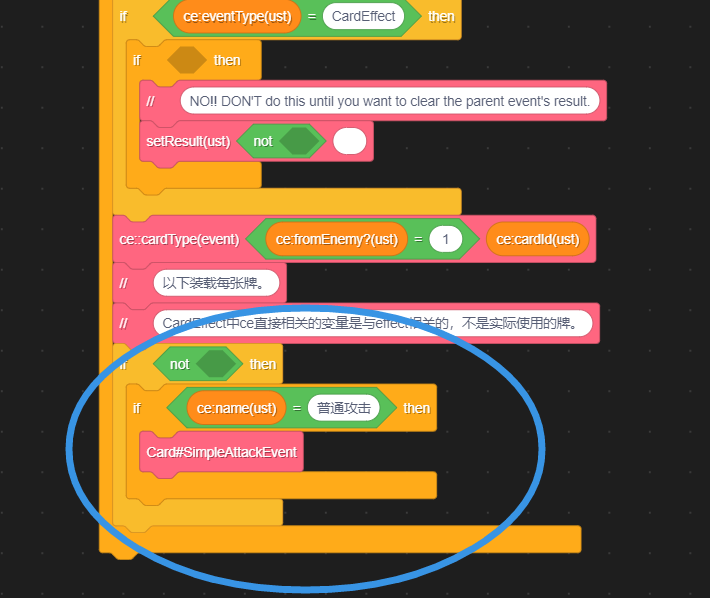
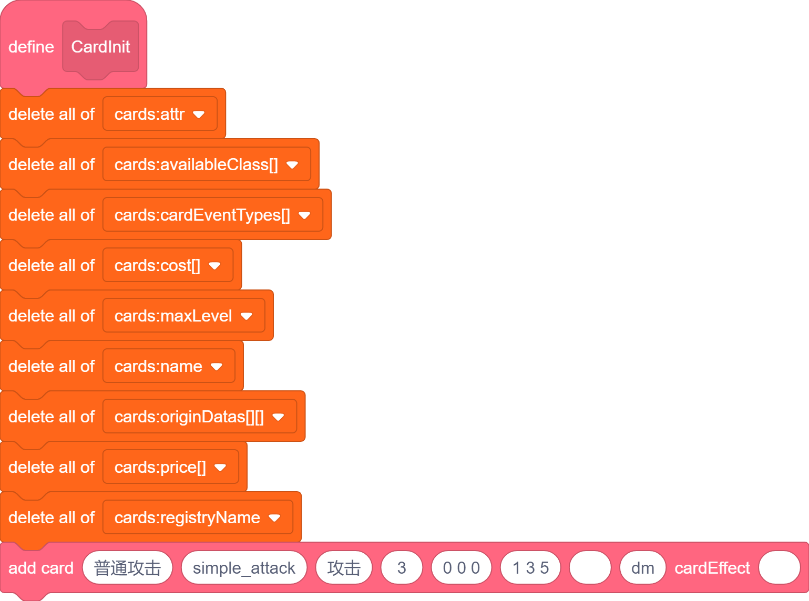
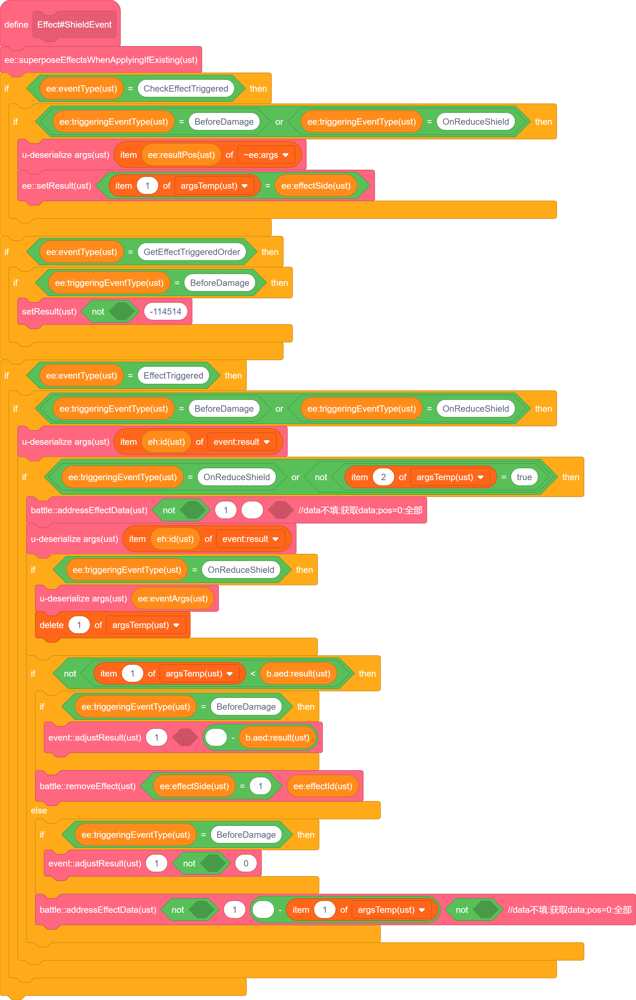
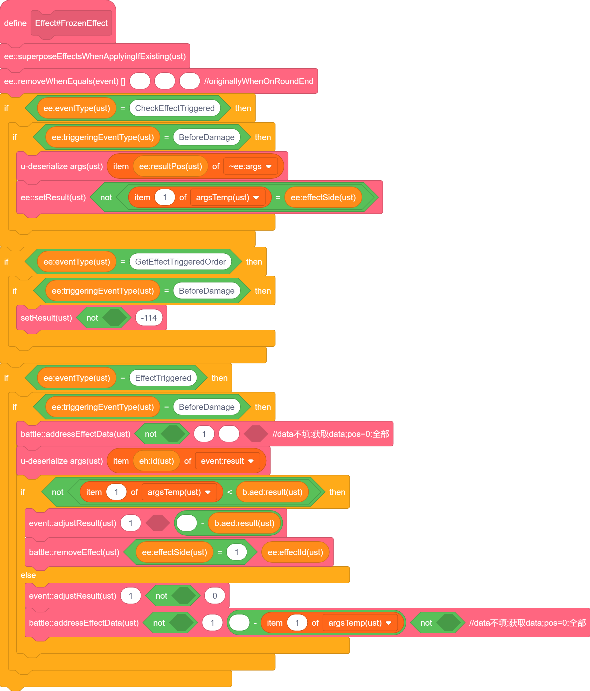
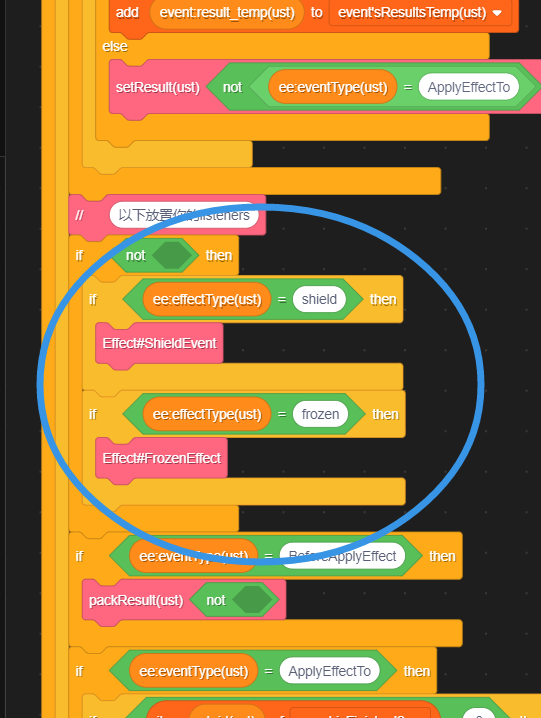
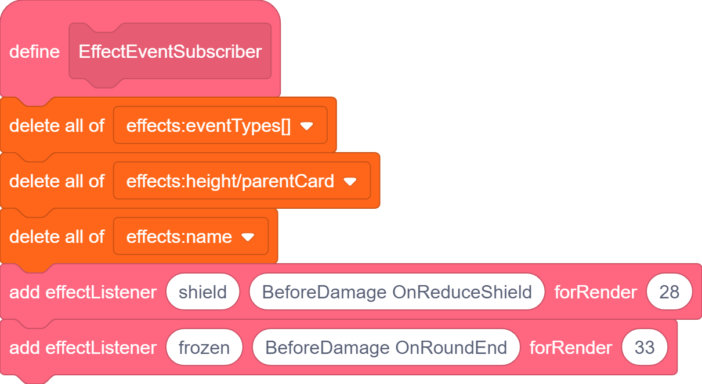

卡事之擎
卡牌本就是一个信息，信息的源头就是事件。
今天我们将事件作为信息的载体，创造伟大的未来。
注意事项
作者是 Chinese，English 是非母语，但作者习惯使用其作为编程环境语言，所以代码例图为英文，希望不会令你感到困扰。
作者公开的引擎中包含了 攻击 行动 咒术 装备 四类卡牌，你可以额外再行增减或修改。发挥你的创造力！
引擎从 CardWars II 修改而来，无论素材是否公开，请你尽可能 不要使用相同素材。
引擎主要是 运算 部分，作者已经验证了可以兼容克隆体进行渲染，但你 需要做好 他们之间的 交互！
如果你有什么东西没有想到解决方法，可能是引擎诞生新部分的预兆，欢迎与作者交流。
作者 移除了 部分可能需要的模块，包括但不限于 存档码 等。
总的来说，我想说的是：不要重复造轮子！读完这篇文章，你应该就能理解所有轮子了
简介
图形化只是我的谎言，学引擎节省你的时间。
我将先对一个 卡牌被使用 事件触发时开始梳理引擎的逻辑。
除非相关逻辑过于繁琐，一个过程只会被详细解释一次。
仅在 简介 中没有提及情况下，默认认为不存在其他卡牌。
具体内容可能需要参照其他章节，这是因为这个引擎使用到了其他章节的内容。
情况1
使用一张 造成两点伤害(记该牌为 普通攻击)。
分析：触发 battle::useCard 相关部分，先后发送至多六个事件 CheckUseCard BeforeUseCard OnUseCard AfterUseCard CardBackDeck，以及 ServerUsedResult/SetUsedResult(这两个先暂时忽略)。涉及到 battle::dealDamage。
如果你想，你可以直接看后面的流程图，但文字说明会更加具体。
准备工作
渲染部分略。首先在 CardInit 中添加你的卡牌，使用 addCard。
你目前需要注意的参数只有 name(=普通攻击) registryName(实际用于 效果 部分) maxLevel(设置为 1 即可) attribute(=攻击)。
卡牌与效果最不同的地方在于效果的 name 其实是 registryName，因为添加效果时其实添加的是 eventListener。
修改这点可能会有点麻烦，附录我会写关于它的内容。
其他部分分属其他逻辑。
第一步
最先发送的 CheckUseCard 会在 CardEvents 中找到 普通攻击，先对事件赋初值 1 代表执行可以成立，之后在 普通攻击 相关事件中 发现没有编写该事件，于是最终返回了 1，在 battle::useCard 中进入出牌相关逻辑。
太好了，第一步就涉及了 EventListeners，真是劝退啊。
这只是最最基础的结构，希望你坚持下去，传播这个引擎。
第二步
BeforeUseCard 会触发，经过 CheckUseCard 类似的过程，返回了相同的返回值，在 battle::useCard 中触发了相似的逻辑。(我知道很抽象！)
第三步
OnUseCard 终于 触发了，在 CardEvents 中找到了你编写的 普通攻击 逻辑，执行 ce::dealDamage(true, 2, physical)，代码如下:



另外需要指出：Card#SimpleAttackEvent 在 CardEvents 中进行了 注册。
部分参数不需要在意，之后会详细解释。
规范命名可以帮助你维持一个逻辑的严谨性，我不强求你完全使用我的规范，但至少在一部分代码遵从。具体见附录！
第四...等等，损伤
我们忘记了 dealDamage！！！
卡牌游戏中最终极的目标的就是决定双方的胜负，而血量判定是最简单的一种。
在 BattleUtil 中，我放置了很多战斗相关的内容，包括 HPEvents。你可以简单的把杂项放在这里，或者自己新建一个作用域。
仔细观察 battle::dealDamage，我们发现主要分为四步：保存 preFix，发布 BeforeDamage、OnDamageTo、AfterDamage。
我对它们的界定如下：
BeforeDamage 用于修改伤害值。
OnDamageTo 用于实际执行伤害以及直接附加效果(后者一般放在 AfterDamage，大部分 After 会在之后提及)。
AfterDamage 用于攻击后附加效果。
注意：有很多相似的事件都和它一致，多多阅读源码以成为大师！
第四步(这次是真的)
AfterUseCard 触发，与 BeforeUseCard 类似。
杂项
我将解释 CheckUseCard 和 BeforeUseCard 的区别、ce 和 battle 的区别。
他们作为引擎的逻辑，经过我说明，并不意味着引擎不能随意更改——只有适合你想做的事的引擎才是最棒的！
学习的目的是应用，不是考试。
相似而不同
当以下 Event 返回失败时：
| 事件名称 | 返回失败时的行为 | 是否阻断卡牌使用 | 是否触发卡牌相关逻辑 | 是否消耗卡牌及费用 | 是否记录卡牌使用 | 特殊说明 |
|---|---|---|---|---|---|---|
CheckUseCard |
在事件的发送后阻断1 | 是 | 否 | 否 | 否 | 正常使用手牌以此法失败时，会回到手中 |
BeforeUseCard |
直接阻断卡牌使用 | 是 | 否 | 是 | 是 | 无 |
看起来 CheckUseCard 可以检查费用不足时使用消耗费用的牌，那 BeforeUseCard 还有什么用呢？
留给你的思考...
作用域
battle 的作用域是整场战斗，只要是战斗中，就是合法行为。当然，多线程触发各种事件仍然是未定义行为，一定要确保你的"事件 流"唯一。
ce 的作用域是 CardEvents，它需要 CardEvents 开头初始化的那些数据——他们提取了一个卡牌的信息，修改引擎时也要注意添加你自己新建的信息。
这个差异的目的是便捷的使用，如果只调用 battle::dealDamage，你可以自行尝试不破坏作用域的情况下以最少代码实现相同的逻辑，以此自行感受代码复杂程度。
小结1
我们提及了 EventListeners 的使用与 注册，讲述了简单的三段结构(Before On After)和作用域的含义。
普通攻击运作流程
flowchart TD
A["触发 battle::useCard"] ==> B["发送 CheckUseCard 事件"]
B --> C{"CheckUseCard 返回成功?"}
C ==>|"是"| D["发送 BeforeUseCard 事件"]
C -->|"否"| Z["阻断卡牌使用"]
D --> E{"BeforeUseCard 返回成功?"}
G --- F
E ~~~ G[["执行普通攻击逻辑：
ce::dealDamage"]]
E ==>|"是"| F["发送 OnUseCard 事件"]
E -->|"否"| Z
F ==> H["发送 AfterUseCard 事件"]
H ==> J["卡牌使用完成"]
H ~~~ Z
J & Z --> T(("结束"))
dealDamage 相关流程
graph TD
A["触发 battle::dealDamage"] ==> B["保存 preFix"]
B ==> C["发送 BeforeDamage 事件"]
B ~~~ D[["修改伤害值"]]
F --- E
C ==> E["发送 OnDamageTo 事件"]
C ~~~ F[["实际执行伤害"]]
D --- C
F ~~~ H[["附加攻击后效果"]]
E ==> G["发送 AfterDamage 事件"]
G --> T(("结束"))
G --- H
一个普通的攻击，引出了这样复杂(吗?)的逻辑，你可能会觉得没必要，那请听接下来的内容。
情况2
使用一张 获得两点护甲，给予对手三点寒冷(记该牌为 冰盾)。对方再使用两张 普通攻击。
分析：类似情况1。还涉及到 护甲、寒冷 两个 效果。
使用卡牌过程略，将详细分析 OnUseCard 过程，以及 效果 对 普通攻击 的影响。
效果的添加
在 冰盾 正确注册的 OnUseCard 中，调用 ce::applyEffect(shield, 2) ce::applyEffect(frozen, 2)。
就完事了。这里存在一个 解耦 的逻辑：每次添加时直接发送添加的事件，让各个 效果 单独 注册 事件的执行。
运者，尝有大藕当中流，不行也久。一员解耦而下，运者通，百年有余。记其事为解耦。云云。
为了方便，我们将 效果 称作 Effect 吧。(其实是先有 Effect 才有的这篇文章，但谁在乎呢?)
Effect 的添加
如之前所说，effect 是作为 effectListener 存储的，所以你要注意其 name 在传参中的拼写，防止意外错误发生。
这里建议在 EffectEvents 中发现拼写错误时抛出异常以提醒你。具体见附录。
对于 add effectListener，第三个参数用于渲染，跟高度有关，你可以自行尝试。
第一个参数用于指定 effect，第二个参数用于添加你要触发的事件(触发不是监听！)。
Effect 的机制
触发不是监听
在 CardEvents EffectEvents 开头有一串相似的内容，它们负责监听的分发功能，也是监听的核心。
该部分流程较为繁琐，提供流程图如下：
graph LR
T -->|"未上锁"| L["上锁"] --> C["检查事件 trigger 对象"] --> U["解锁"]
E["任意事件"] --> T["EffectEvents——triggering"] -->|"已上锁"| N["结束"]
U --> S["排序对象"]
subgraph ev["依次执行"]
direction RL
B["BeforeTriggered"] --> O["OnTriggered"] --> A["AfterTriggered"]
end
ev --> N
ev ~~~ L
S ----> ev
具体的解释参见 EventTriggers 章节。
这里有几点特别需要注意，此处将额外稍加提及：
只要你添加了某一事件的监听，你就 必须 至少对 CheckEffectTriggered 进行监听(建议对不同事件单独监听)，并使用 ee::setResult 来设定是否需要触发其他逻辑(包括 GetOrder Before On After 等)。
仅在 CheckEffectTriggered 过程上锁是为了避免 CheckEffectTriggered 被 Trigger 导致无限循环及未定义行为(Check 过程可能涉及多线程)。
你可以对除了 CheckEffectTriggered 的其他提及的 Event 进行 Trigger。
Effect 的触发
到了我最喜欢的 EventTriggers，逻辑更上一层楼！
第一个普通攻击使用时
直到 OnUseCard 都与之前一致。
执行 BeforeDamage 时，护甲和寒冷就 发力了 生效了。先提供代码以具体说明：




先执行 CheckEffectTriggered，分别在护甲和寒冷处赋值为 1。
之后在 GetEffectTriggeredOrder 处，设定护甲小于寒冷。(注意：Order 越大越靠前执行)
寒冷先执行 EffectTriggered，发现寒冷值大于伤害，结果扣除相应寒冷值并将伤害赋值为 0。
护甲再执行 EffectTriggered，发现伤害为 0(不足护甲值)，结果扣除 0 点护甲并保持伤害为 0。
BeforeDamage 执行完毕，伤害为 0，进入 OnDamageTo。(特别的，根据实现，可设计成伤害为 0 时仅渲染伤害，不触发 On After)。
需要指出：目前没有涉及到 Before 和 After，其作用以文字说明分别是：
+ "当...时，该 Effect 失效"
+ "在该 Effect 触发后，...触发"
这大概能说明它们的作用，以后可能给出相关案例。
第二个普通攻击使用时
基本同上，不同之处在于：
寒冷先执行 EffectTriggered，发现寒冷值小于伤害，结果扣除全部寒冷值并减少等量伤害。
护甲再执行 EffectTriggered，发现护甲值大于伤害，结果扣除相应护甲值并将伤害赋值为 0。
二者总结如下：
-
流程一致：
- 两次攻击都遵循相同的流程：... →
CheckUseCard→BeforeUseCard→OnUseCard→BeforeDamage→OnDamageTo→AfterDamage→AfterUseCard→ ... - 在
BeforeDamage中，护甲和寒冷效果都会生效。
- 两次攻击都遵循相同的流程：... →
-
效果触发顺序：
- 护甲和寒冷的触发顺序由
GetEffectTriggeredOrder决定，寒冷先于护甲执行。
- 护甲和寒冷的触发顺序由
-
伤害计算逻辑：
- 在
BeforeDamage中，伤害值会根据护甲和寒冷的效果进行调整。 - 如果伤害值被调整为
0，则可能不会触发OnDamageTo和AfterDamage（根据具体实现）。
- 在
-
不同点
| 对比项 | 第一次攻击 | 第二次攻击 |
|---|---|---|
| 流程 | 相同 | 相同 |
| 寒冷效果 | 寒冷值 > 伤害值，扣除寒冷值并将伤害值设为 0 |
寒冷值 < 伤害值，扣除寒冷值并减少伤害 |
| 护甲效果 | 伤害值已为 0，护甲值未扣除 |
护甲值 > 剩余伤害值，伤害值设为 0 |
| 最终结果 | 伤害值为 0，目标不受伤害 |
伤害值为 0，目标不受伤害 |
小结2
更深入的机制接触到 Effect 和更为全面的三段结构，同时新增的 EventTriggers 使得事件的修改变得灵活。
整体流程如下(已忽略 MoveCard 等)：
graph TD
A["使用冰盾——触发 battle::useCard"] ==> B["发送 CheckUseCard 事件"]
B --> C{"CheckUseCard 返回成功?"}
C ==>|"是"| D["发送 BeforeUseCard 事件"]
C -->|"否"| Z["阻断卡牌使用"]
D --> E{"BeforeUseCard 返回成功?"}
E ~~~ G[["执行冰盾逻辑：
ce::applyEffect(shield, 2) 和
ce::applyEffect(frozen, 2)"]]
E ==>|"是"| F["发送 OnUseCard 事件"]
E -->|"否"| Z
G --- F
F ==> H["发送 AfterUseCard 事件"]
H ==> J["卡牌使用完成"]
H ~~~ Z
J --> C1 & C2
Z ~~~ C2
subgraph C1["普通攻击1"]
direction TB
K["触发 battle::useCard"] ==> L["发送 CheckUseCard 事件"]
L --> M{"CheckUseCard 返回成功?"}
M ==>|"是"| N["发送 BeforeUseCard 事件"]
M -->|"否"| Z1["阻断卡牌使用"]
N --> O{"BeforeUseCard 返回成功?"}
O ~~~ Q[["执行普通攻击逻辑：
ce::dealDamage(true, 2, physical)"]]
O ==>|"是"| P["发送 OnUseCard 事件"]
O -->|"否"| Z1
Q --- P
P ==> R["发送 BeforeDamage 事件"]
subgraph D1["EffectsEvent"]
R --> S["寒冷效果触发：伤害 = 2 - 2 = 0"]
S --> T["护甲效果触发：伤害 = 0"]
end
T ==> U["发送 OnDamageTo 事件"]
U ==> V["发送 AfterDamage 事件"]
V ==> BA["发送 AfterUseCard 事件"]
BA --> W["卡牌使用完成"]
end
subgraph C2["普通攻击2"]
direction TB
X["触发 battle::useCard"] ==> Y["发送 CheckUseCard 事件"]
Y --> Z2{"CheckUseCard 返回成功?"}
Z2 ==>|"是"| AA["发送 BeforeUseCard 事件"]
Z2 -->|"否"| Z3["阻断卡牌使用"]
AA --> AB{"BeforeUseCard 返回成功?"}
AB ==>|"是"| AC["发送 OnUseCard 事件"]
AB -->|"否"| Z3
AB ~~~ AD[["执行普通攻击逻辑:
ce::dealDamage(true, 2, physical)"]]
AD --- AC
AC ==> AE["发送 BeforeDamage 事件"]
subgraph D2["EffectsEvent"]
AE --> AF["寒冷效果触发：伤害 = 2 - 1 = 1"]
AF --> AG["护甲效果触发：伤害 = 1 - 1 = 0"]
end
AG ==> AH["发送 OnDamageTo 事件"]
AH ==> AI["发送 AfterDamage 事件"]
AI ==> BB["发送 AfterUseCard 事件"]
BB --> AJ["卡牌使用完成"]
end
sequenceDiagram
participant User
participant Battle
participant CardEvents
participant EffectEvents
User->>Battle: 使用冰盾
Battle->>CardEvents: CheckUseCard
CardEvents-->>Battle: 返回成功
Battle->>CardEvents: BeforeUseCard
CardEvents-->>Battle: 返回成功
Battle->>CardEvents: OnUseCard
CardEvents->>EffectEvents: applyEffect(shield, 2)
CardEvents->>EffectEvents: applyEffect(frozen, 2)
EffectEvents-->>CardEvents: 效果添加完成
CardEvents-->>Battle: 返回成功
Battle->>CardEvents: AfterUseCard
CardEvents-->>Battle: 返回成功
Battle-->>User: 冰盾使用完成
User->>Battle: 使用普通攻击1
Battle->>CardEvents: CheckUseCard
CardEvents-->>Battle: 返回成功
Battle->>CardEvents: BeforeUseCard
CardEvents-->>Battle: 返回成功
Battle->>CardEvents: OnUseCard
CardEvents->>EffectEvents: BeforeDamage
EffectEvents->>EffectEvents: 寒冷效果触发 (伤害 = 2 - 2 = 0)
EffectEvents->>EffectEvents: 护甲效果触发 (伤害 = 0)
EffectEvents-->>CardEvents: 返回成功
CardEvents-->>Battle: 返回成功
Battle->>CardEvents: AfterUseCard
CardEvents-->>Battle: 返回成功
Battle-->>User: 普通攻击1使用完成
User->>Battle: 使用普通攻击2
Battle->>CardEvents: CheckUseCard
CardEvents-->>Battle: 返回成功
Battle->>CardEvents: BeforeUseCard
CardEvents-->>Battle: 返回成功
Battle->>CardEvents: OnUseCard
CardEvents->>EffectEvents: BeforeDamage
EffectEvents->>EffectEvents: 寒冷效果触发 (伤害 = 2 - 1 = 1)
EffectEvents->>EffectEvents: 护甲效果触发 (伤害 = 1 - 1 = 0)
EffectEvents-->>CardEvents: 返回成功
CardEvents-->>Battle: 返回成功
Battle->>CardEvents: AfterUseCard
CardEvents-->>Battle: 返回成功
Battle-->>User: 普通攻击2使用完成
丰富的机制使得简单的攻击变得更加复杂，而这之中不变的是我们简单的引擎。
情况3
装备一个 每使用两张攻击牌，造成一点伤害(记为 短剑)
核心代码分析
渲染部分
其他代码分析
有些内容上述未涉及，进行补充说明。
附录
对于一些人来说，这里才是正文。
其他代码规范
将 Effect 作为非事件添加
检查错误，抛出异常
-
ServerUsedResult（其他使用）/SetUsedResult（正常使用）。 ↩